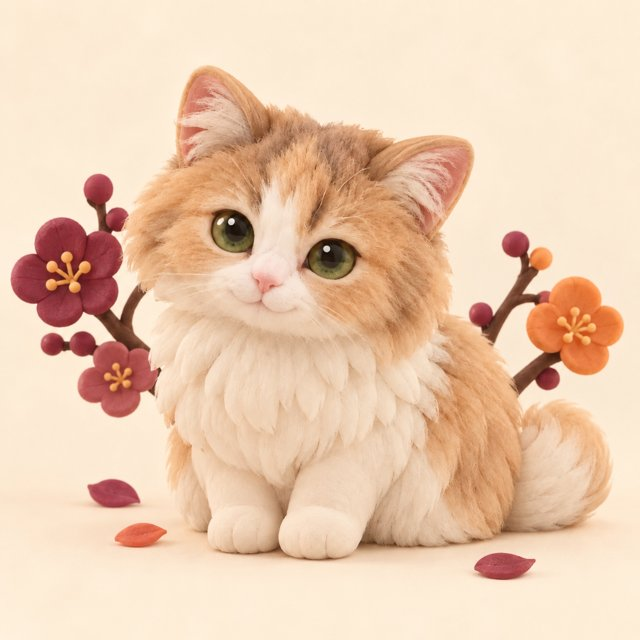

māo
cat

小猫陪你学中文 · Learn Chinese with Kitty
Tap the microphone and say a fun sentence in Chinese using 水. Tap again when you're done.
When you tap Stop, the recording saves to the server by itself, so it plays on every phone and computer within about a minute. Save file keeps a copy for you, named like day01-char.m4a.
Type the server password once. After that, every recording uploads by itself when you tap Stop.
"Auto" changes with the calendar: Halloween in late October, Christmas in December, and so on.
Songs added here play on this phone. For every device, upload songs to the music folder on GitHub named after the theme, like halloween.mp3, christmas.mp3, or all.mp3 for every theme.
Files in the GitHub voice and music folders play everywhere. Anything recorded or added here without uploading stays on this phone only.